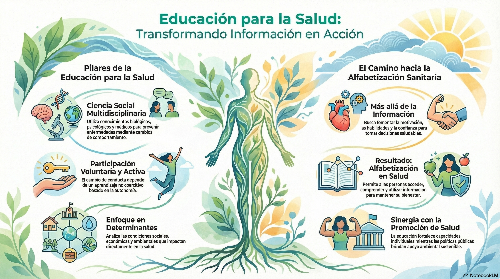

5 Educación para la salud desd el ámbito comunitario
En el ámbito de la sanidad comunitaria la educación en salud juega un papel central para mejorar la calidad de vida de la población ya que puede generar cambios de comportamientos permanentes en la población. Antes de comenzar a indagar cuales pueden ser las metodologías a utilizar para la eduación en salud debemos definir el concepto propio de eduación en salud:
Oportunidades de aprendizaje cuidadosamente diseñadas que impliquen alguna forma de comunicación destinada a mejorar la alfabetización en salud incluyendo la mejora del conocimiento y el desarrollo de habilidades para la vida que contribuyen a la salud individual y comunitaria.
De la definición del concepto de educación para la salud podemos extraer otro concepto clave en el ambito comunitario como es la alfabetización en salud:
Capacidad de las personas para acceder, comprender, evaluar y comunicar información para afrontar las exigencias de los diferentes contexto de salud con el fin de promover y mantener una buena salud a lo largo de la vida.
Finalmente, de la alfabetización en salud podemos extraer el último gran concepto a tener en cuanta: los estilo de vida:
Forma de vida basada en patrones de comportamiento identificables determinados por la interacción entras las características personales de un individuo y sus interacciones sociales, sus condicionantes de vida tanto socioeconómicas como ambientales.
La relación existen entre estos conceptos nos genera una idea de cuales deben ser las características de una buena intervención en educación para la salud, a saber:
Las intervenciones centradas en la educación para la salud deben generar un impacto real en la alfabetización en salud de una persona o una comunidad para lograr un cambio permanente en los estilos de vida de esa persona o comunidad.
Para lograr generar ese “impacto real” se debe, primariamente, entender como funciona el comportamiento humano y las necesidades que tiene para generar un cambio de conducta en él logrando identificar las barreras y los facilitadores.

5.1 Teorías de conductales
El concepto de “teoría de conducta humana” se torna en algo general y ampliamente estudido desde el ambito de la psicología. Es por ello que, en aras de un buen aprendizaje, solo trataremos de forma aproximada las distinas aproximaciones que existen.
Por lo general, podemos realizar 3 grandes agrupaciones en las teorías de cambio de conducta. Estas son:
- Intrapersonales: Aquellas que abordan las características propias del individuo.
- Interpersonales: Aquellas que abordan las características sociales que rodean al individuo.
- Ambientales: Aquellas que abordan las características comunitarias que rodean al individuo.
5.1.1 Teorías conductuales: Intrapersonales
Dentro de esta grupo de teorías centradas en las características propias del individuo podemos encontrar:
Teoriza el comportamiento racional y lógico del individuo indicando como un individuo con un correcto conocimiento acerca de un hecho tendrá la capacidad de tomar correctamente la decisión.
Teoriza como la capacidad de toma de decisión de un individuo se centra en habilidad para analizar la severidad y susceptibilidad de padecer una enfermedad.
Teoriza como la capacidad de toma de decisión de un individuo se centra en habilidad para generar dos procesos paralelos de análisis. Uno de ellos en el analisis de la susceptibilidad de parecer una enfermedad y otro en el análisis de las acciones que de deben llevar a cabo para reducir el riesgo de padecer esa enfermedad.
Teoriza como la capacidad de toma de decisión de un individuo transcurre por distintas etapas como son la precontemplación, la contemplación, preparación, acción y mantenimiento.
Teoriza como la capacidad de toma de decisión de un individuo se centra tanto en el comportamiento propio del individuo como en las normas sociales establecidas en esa comunidad.
Teoriza como la capacidad de toma de decisión de un individuo transcurre en 3 fases distintas donde el individuo evalua la necesidad en salud, genera conciencia sobre la necesidad y desarrolla un plan personalizado para el cambio
5.1.2 Teorías conductuales: Interpersonales
Dentro de esta grupo de teorías centradas en las características de las personas que rodean al individuo podemos encontrar:
Teoriza como la capacidad de toma de decisión de un individuo depende de 3 factores diferenciados: la autopercepción de eficacia, los objetivos y los resultados esperados por esa persona.
5.1.3 Teorías conductuales: Ambientales
Dentro de esta grupo de teorías centradas en las características de la comunidad que rodean al individuo podemos encontrar:
Teoriza como la capacidad de toma de decisión de un individuo depende de estrategias personalizadas a nivel individual, grupal, social y comunitario / poblacional.
Teoriza como la capacidad de toma de decisión de un individuo depende del grupo poblacional al que pertenezca indicando la existencia de 5 grupos a saber:
- Innovadores.
- Adoptadores tempranos.
- Adoptadores comunes.
- Adoptadores tardíos.
- Rezagados.
5.2 Barreras y facilitadores
Teniendo en cuenta las distintas aproximaciones teóricas en los modelos de cambio de conducta, debemos identificar que variables o factores pueden actuar como barreras y cuales pueden actuar como facilitadores a la hora de generar una intervención en eduación para la salud.
5.2.1 Factores necesarios para garantizar el éxito de una intervención en educación para la salud
Participación activa: Se debe conseguir una participación activa en todas las fases de todos los individuos y organismos involucrados en la intervención.
Correcta planificación: Debe existir una correcta planificación de la intervención desde su planteamiento original hasta su ejecución transcurriendo entre los individuos identificados y las acciones específicas planteadas.
Evaluación de las necesidades de recursos: Se debe realizar un análisis profundo de los recursos tanto materiales como inmateriales necesarios para la realizar la iintervención antes de llevarla a cabo.
Creación de programas integrales: Debe existir una planificación de acciones globales que interfieran en varios niveles de la comunidad y por distintas vías.
Integración en la sociedad: Se deben generar intervenciones que se encuentren integradas en la propia comunidad.
Cambios a largo plazo: Se deben desarrollar intervenciones a largo plazo para producir cambios duraderos.
Cambios en los estándares establecidos: Se debe realizar acciones que modifiquen las normas sociales establecidas para propiciar un cambio en la comunidad.
Registro exahustivo: Se debe realizar un registro y análisis exahustivo de la interveción valorando no solo su efectividad sino que se debe valorar su coste-beneficio.
5.3 Ámbito de actuación y responsabilidad
Las intervenciones en educación sanitaria deben encontrarse realizadas en los principales entorno comunitarios. Dentro de estos entorno podemos destacar:
Colegios
Campus universitarios
Compañias y/o empresas
Entorno sanitarios
Organizaciones oficiales y/o gubernamentales
Las distintas comunidades de la población
5.3.1 Responsabilidades en eduación para la salud
Si nos centramos en las responsabilidades de los “educadores en salud” la OMS nos define ciertas competencias / responsabilidad que éstos deben tener:
Competencia A: Obtener datos relacionados con la salud sobre los entornos sociales y culturales, factores de crecimiento y desarrollo, necesidades e intereses.
Competencia B: Distinguir entre el comportamiento que fomenta el bienestar y aquel que lo dificulta.
Competencia C: Inferir las necesidades de educación sanitaria basándose en los datos obtenidos.
Competencia A: Reclutar organizaciones comunitarias, personas de referencia y participantes potenciales para obtener apoyo y asistencia en la planificación del programa.
Competencia B: Desarrollar un plan lógico de alcance y secuencia para un programa de educación sanitaria.
Competencia C: Formular objetivos de programa apropiados y medibles.
Competencia D: Diseñar programas educativos coherentes con los objetivos especificados.
Competencia A: Demostrar competencia en la ejecución de los programas educativos planificados.
Competencia B: Inferir objetivos de capacitación según sea necesario para implementar programas de instrucción en entornos específicos.
Competencia C: Seleccionar los métodos y medios de comunicación más adecuados para implementar los planes del programa para alumnos específicos.
Competencia D: Monitorear los programas educativos, ajustando los objetivos y las actividades según sea necesario.
Competencia A: Desarrollar planes para evaluar el logro de los objetivos del programa.
Competencia B: Llevar a cabo los planes de evaluación.
Competencia C: Interpretar los resultados de la evaluación del programa.
Competencia D: Inferir las implicaciones de los hallazgos para la planificación de futuros programas.
Competencia A: Desarrollar un plan para coordinar los servicios de educación sanitaria.
Competencia B: Facilitar la cooperación entre los distintos niveles del personal del programa.
Competencia C: Formular modalidades prácticas de colaboración entre agencias y organizaciones de salud.
Competencia D: Organizar programas de formación continua para profesores, voluntarios y otro personal interesado.
Competencia A: Utilizar eficazmente los sistemas informatizados de recuperación de información sanitaria.
Competencia B: Establecer relaciones de consultoría eficaces con quienes soliciten asistencia para resolver problemas relacionados con la salud.
Competencia C: Interpretar y responder a las solicitudes de información sanitaria.
Competencia D: Seleccionar materiales de recursos educativos eficaces para su difusión.
Competencia A: Interpretar conceptos, propósitos y teorías de la educación sanitaria.
Competencia B: Predecir el impacto de los sistemas de valores sociales en los programas de educación sanitaria.
Competencia C: Seleccionar una variedad de métodos y técnicas de comunicación para proporcionar información sanitaria.
Competencia D: Fomentar la comunicación entre los proveedores de atención sanitaria y los consumidores.